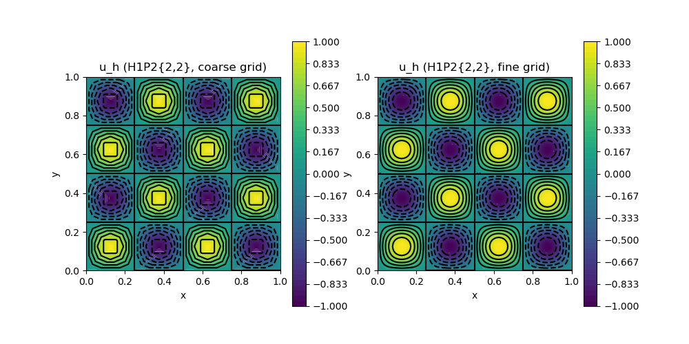

A07 : Interpolation Between Meshes
This example demonstrates the interpolation between meshes feature. Here, we interpolate a function withe the P2 element of a coarse triangulation and then interpolate this P2 function on two uniform refinements into some P1 function. Then, both finite element functions are plotted.
module ExampleA07_InterpolationBetweenMeshes
using GradientRobustMultiPhysics
using ExtendableGrids
using GridVisualize
# function to interpolate
function exact_u(result,x)
result[1] = sin(4*pi*x[1])*sin(4*pi*x[2]);
result[2] = cos(4*pi*x[1])*cos(4*pi*x[2]);
end
const u = DataFunction(exact_u, [2,2]; name = "u", dependencies = "X", bonus_quadorder = 5)
# everything is wrapped in a main function
function main(; ν = 1e-3, nrefinements = 4, verbosity = 0, Plotter = nothing)
# set log level
set_verbosity(verbosity)
# generate two grids
xgrid1 = uniform_refine(grid_unitsquare(Triangle2D),nrefinements)
xgrid2 = uniform_refine(xgrid1, 2; store_parents = true)
@show xgrid1 xgrid2
# set finite element types for the two grids
FEType1 = H1P2{2,2}
FEType2 = H1P2{2,2}
# generate coressponding finite element spaces and FEVectors
FES1 = FESpace{FEType1}(xgrid1)
FES2 = FESpace{FEType2}(xgrid2)
FEFunction1 = FEVector("$FEType1 on grid 1",FES1)
FEFunction2 = FEVector("$FEType2 on grid 2",FES2)
# interpolate function onto first grid
interpolate!(FEFunction1[1], u)
# interpolate onto other grid
@time interpolate!(FEFunction2[1], FEFunction1[1])
@time interpolate!(FEFunction2[1], FEFunction1[1], use_cellparents = true)
# plot
p = GridVisualizer(; Plotter = Plotter, layout = (1,2), clear = true, resolution = (1000,500))
scalarplot!(p[1,1], xgrid1, view(nodevalues(FEFunction1[1]),1,:), levels = 11, title = "u_h ($FEType1, coarse grid)")
scalarplot!(p[1,2], xgrid2, view(nodevalues(FEFunction2[1]),1,:), levels = 11, title = "u_h ($FEType2, fine grid)")
end
endThis page was generated using Literate.jl.
Default output:
julia> ExampleA07_InterpolationBetweenMeshes.main()
xgrid1 = ExtendableGrid{Float64, Int32};
dim: 2 nodes: 545 cells: 1024 bfaces: 64
xgrid2 = ExtendableGrid{Float64, Int32};
dim: 2 nodes: 8321 cells: 16384 bfaces: 256
1.999527 seconds (6.55 M allocations: 242.487 MiB, 4.16% gc time, 85.91% compilation time)
1.486805 seconds (5.36 M allocations: 169.024 MiB, 3.18% gc time, 82.45% compilation time)